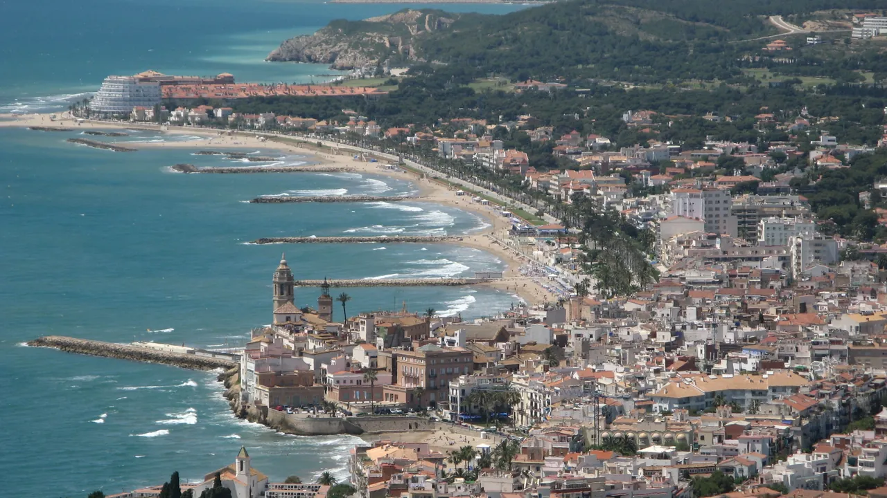

Day 4 · 9/1 화 · Bàscara

오늘의 주요 장소


P0 연결거점 이동
- 핵심 실행
- Sants 렌터카→Sitges→Bàscara
- 권장 출발
- 08:00 체크아웃, 09:00 인수 (예약 07:00부터 가능)
- 완충
- 인수 60분·Sitges 출차 30분
- 예약
- 2건 — 완료 1 · 미확정 1 · 현황
이동일 체크리스트
- 출발·체크아웃08:00 체크아웃, 09:00 인수 (예약 07:00부터 가능)
- 경유·핵심Sants 렌터카→Sitges→Bàscara
- 완충인수 60분·Sitges 출차 30분
- 지연 시 생략해변산책·실내 1곳
- 대체안Sitges 1곳만 보고 Bàscara 직행
- 잠금·예약렌터카 완료(Hertz L671E2E0288)·Sitges·Bàscara 체크인 조건 재확인
실행성 감사의 값을 이동 순서로 재배열한 것이다. 체크인 시각·주차 등 미확정 값은 확정 후 채운다.
시간표
Barcelona
| 시간 | 일정 | 실행 포인트 |
|---|---|---|
| 06:50–07:40 | 기상·숙소 아침·최종 짐 정리 | 냉장고 비우기, 물 2L, 운전 간식, 선글라스, 주차 앱 준비 |
| 07:40–08:10 | 체크아웃 | 숙소 체크아웃 09:30–12:00 (2026-08-05 확인) 이지만 인수 시각에 맞춰 일찍 나온다 |
| 08:10–08:45 | Barcelona Sants 이동 | 숙소에서 약 650m — 짐이 감당되면 도보 10분 안팎, 아니면 택시로 몇 분이다. |
| 09:00–09:35 | 렌터카 인수 | Hertz Sants 영업소(C/ Viriat 45) · 확정(2026-08-05) 예약 L671E2E0288 · 07:00부터 인수 가능. 사진·동영상으로 차체, 휠, 유리, 연료, 주행거리 기록. 프랑스 주행을 이 자리에서 신고한다 — 아래 참조 |
| 09:35–10:20 | 바르셀로나→시체스 | C-32 유료구간 사용 권장. 렌터카의 ZBE 적합 여부는 업체가 보장하도록 계약서에 확인한다. |
| 10:20–10:40 | Can Robert 주차 | 중심 진입을 피하는 유료 환승형 주차장. 대안은 24시간 운영 Plaça del Pou Vedre 지하주차장. |
| 10:40–11:05 | 시체스 구시가지 도보 | Carrer de Sant Francesc → Plaça Cap de la Vila → 교회 언덕 방향 |
| 11:05–12:20 | Museu del Cau Ferrat + Museu de Maricel | 화–일 10:00–19:00, 월요일 휴관. 통합 일반권 €12/인 (2026-08 확인). Rusiñol의 집·작업실과 모더니즘 컬렉션에 집중 |
| 12:20–12:50 | Sant Bartomeu 교회 외관·해변 전망 | 계단과 Baluard에서 스케치 사진 10분. 박물관 관람이 길어지면 해변 산책을 줄인다. |
| 13:00–14:25 | La Zorra 점심 | 쌀요리 전문. 2인 이상 공유. 13:00 예약. 평일 점심 세트 또는 arroz a banda 권장. |
| 14:25–14:55 | Passeig de la Ribera 짧은 산책 | 바다에 들어가기보다 25–30분 산책. 9월 1일부터 해변 구조서비스는 10:00–18:00. |
| 14:55–15:15 | 주차장 복귀·출발 준비 | 화장실, 물, 목적지 주소, 연료 확인 |
| 15:15–17:30 | 시체스→지로나 방면 | C-32 → 바르셀로나 외곽순환 → AP-7. 정상 1시간 45분–2시간, 교통 지연 포함 2시간 15분 계획 |
| 17:30 이후 | 지로나 축소안 또는 Bàscara 직행 | 시간·컨디션이 허락할 때만 지로나 성당 축소안을 실행한다. 세부는 지로나 챕터의 9/1 계획을 따른다. |
| 저녁 | Bàscara 체크인·가벼운 저녁 | 숙소 체크인은 12:00부터 가능하다. 운전일이므로 거점 인근에서 간단히 먹는다. |
피로도
4/5
이 날의 장소
일자별 시간표와 본문 표기에서 찾은 것이다. 하루의 전부가 아니라 장소 카드가 있는 것만 담는다.
이 날의 메모
Barcelona
렌터카 인수, 시체스 모더니즘과 바다, 지로나 이동
운전 3시간 안팎과 체크인 2회가 겹친다. 시체스에서 활동을 추가하지 않는다.
⚠ 인수 창구에서 반드시 할 말 — 프랑스 주행 신고 보험
Day 5(9/2)에 콜리우르로 국경을 넘는다. Hertz 스페인 약관은 차량을 스페인 밖으로 가져갈 때 크로스보더 요금이 붙고, 신고하지 않으면 별도 위약금이 부과되며, 무엇보다 신고 없이 국경을 넘으면 제3자·CDW·도난·SuperCover 가 전부 무효가 된다고 명시한다. 프랑스는 허용 국가 목록에 있으므로 문제는 허용 여부가 아니라 신고 여부다.
인수 창구에서 이 한 문장을 말한다 — "We will drive to France (Collioure) on September 2." 계약서에 크로스보더 항목이 들어갔는지 서명 전에 눈으로 확인한다. 금액과 조건은 계약서 기준이다 요금·조건 계약서 확인. 출처: Hertz Rental Terms (Spain, DRIVINGRESTRICTIONS) — 2026-08-14 확인.
⚠ 미결정 권고 — 시체스를 이 날 넣을 것인가 사용자 결정 대기
결정하지 않았다. 다음 라운드로 넘긴 항목이고, 잊지 않으려고 여기 적어 둔다 (2026-08-14).
지리적으로 이 날은 남쪽으로 40km 내려갔다가 북쪽으로 130km 올라간다. 시체스를 넣지 않으면 Sants → AP-7 북행 한 방향이다. 왕복분 약 80–90km, 고속도로 주행 1시간–1시간 30분, C-32 통행료가 순수하게 추가된다. 그 위에 렌터카 인수(09:00)·박물관·점심 예약·주차가 얹힌 날이라 피로도 4/5 가 붙은 이유이기도 하다.
| 안 | 내용 | 얻는 것 | 잃는 것 |
|---|---|---|---|
| A. 현행 유지 | Day 4 에 시체스를 넣고 Bàscara 로 북상 | 시체스를 차로 편하게 본다. Day 2–3 이 가벼워진다 | 왕복 80–90km·통행료·이동일 피로 |
| B. 시체스를 Day 2 또는 3 으로 | Sants 에서 Rodalies R2 Sud 근교열차로 당일 왕복, Day 4 는 AP-7 북행만 | 이동일이 단순해지고 주차·통행료가 사라진다 | Day 2–3 밀도 상승, La Zorra 13:00 예약과 렌터카 09:00 인수 재조정 |
| C. 시체스 삭제 | 해안 모더니즘을 콜리우르·카다케스로 대체 | 가장 가볍다 | Rusiñol 의 집(Cau Ferrat)을 못 본다 |
B 를 고르면 함께 바뀌는 것: Day 2 또는 3 의 일정표, La Zorra 예약일, Hertz 인수 시각 (09:00 이 더는 필요 없을 수 있다), Day 4 카드·경로 캐시, 감사표 Day 4 행. 열차 소요·운임은 확정 전에 공식 확인이 필요하다 Rodalies R2 Sud 시각·운임 확인.
9월 1일의 의사결정 기준
- 렌터카 인수가 10:00 이전 완료되면 위 일정대로 진행한다.
- 인수가 10:00–11:00에 끝나면 시체스 박물관을 60분으로 줄이고 15:15 출발을 유지한다.
- 인수가 11:00 이후면 시체스는 점심+해변 전망 90분만 하고 지로나로 이동한다.
- 폭우·파업·대규모 교통통제가 있으면 시체스를 생략하고 지로나 직행이 원칙이다.
상세 실행 확인
- 최고 리스크
- 인수·체크아웃 순서·짐 노출
- 우선 삭제
- 해변산책·실내 1곳
- 대체안
- Sitges 1곳만 보고 Bàscara 직행
- 식사·휴식
- Sitges 점심
- 잠금 필요
- 렌터카 완료(Hertz L671E2E0288)·Sitges·Bàscara 체크인 조건 재확인
Google 실행지도
Sants 렌터카 인수 → Sitges → Bàscara 체크인
지도 펼치기
지도는 펼칠 때만 불러옵니다.
Daily Action Map
실제 좌표와 OpenStreetMap을 사용한 실행용 요약입니다. 도로·대중교통 상황은 출발 직전에 다시 확인하세요.